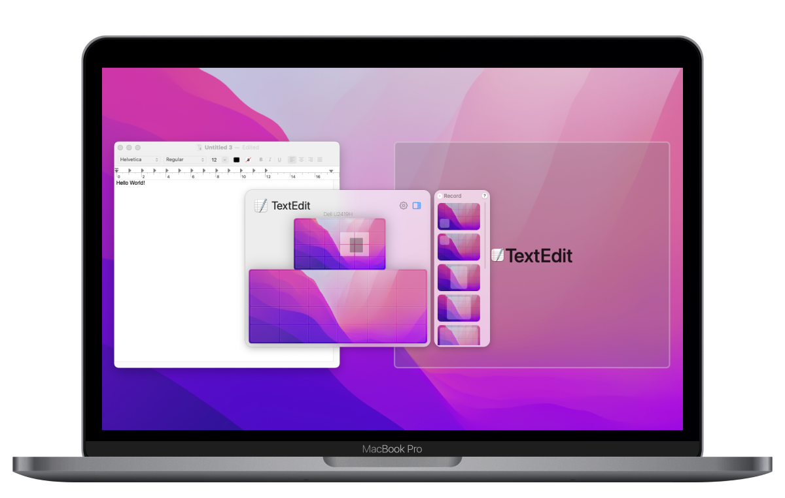
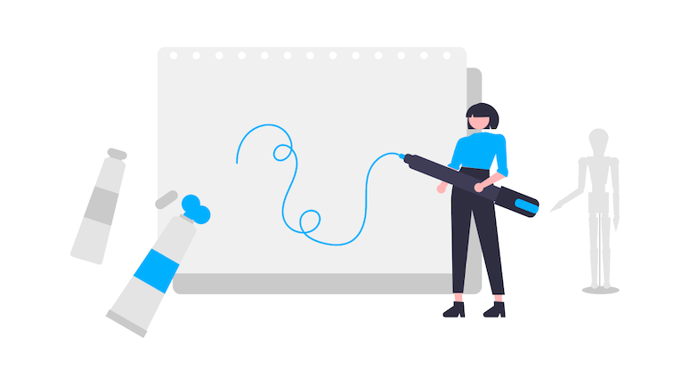

Lasso app




The most intuitive way to reorganize windows
Click-and-draw is something that every mac user used to. So why not use this pattern to resize and move windows around?
Works perfectly with multiple monitors
No matter how many monitors do you have, Lasso will show them with respect to their location regarding each other.
The most intuitive way to reorganize windows
Click-and-draw is something that every mac user used to. So why not use this pattern to resize and move windows around?
One App, Unlimited Layouts
We designed and tested prototypes that helped identify pain points in the account creation process. Together, we shaped the new standard.